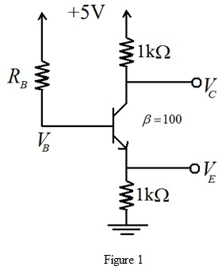

Apply Kirchhoff’s current law across the base emitter circuit.
substitute for .
.
Refer to Figure P6.61 in the text book.
Draw the modified circuit.

Apply Kirchhoff’s current law across the base emitter circuit.
substitute for.
The voltage  is
is
…… (1)
The voltage  is
is
.….. (2)
The voltage  is
is
…... (3)
Substitute  , and in equation (1).
, and in equation (1).
…... (4)
Substitute  , and
, and in equation (2).
in equation (2).
…... (5)
Substitute  ,
,  and in equation (3) .
and in equation (3) .
…... (6)
 for.
for. From equation (4);
Thus, the voltage for
for  is.
is.
From equation (5);
Thus, the emitter voltage for is
is .
.
From equation (6);
Thus, the voltage .
.
The voltage  is,
is,
Since  is positive, the transistor is in active mode and the obtained voltages are correct.
is positive, the transistor is in active mode and the obtained voltages are correct.
Determine the voltagesfor.
From equation (5);
From equation (6);
The voltage  is,
is,
Since is negative, the transistor is in saturation mode and hence the obtained voltages are not correct.
In saturation, the voltage  and
and 
From the given circuit,
and
The expression for the emitter current is,
Simplify further.
Hence the emitter voltage when  is.
is.
 is,
is,
Hence the voltage  when is.
when is.
The voltage  is,
is,
Hence the voltage  when
when  is.
is.
Determine the voltagesfor.
From equation (5);
From equation (6);
The voltage  is,
is,
Since  is negative, the transistor is in saturation mode and hence the obtained voltages are not correct.
is negative, the transistor is in saturation mode and hence the obtained voltages are not correct.
In saturation, the voltage and 
From the given circuit,
and

The expression for the emitter current is,
Simplify further.
Hence the emitter voltage when is.
The voltage  is,
is,
Hence the voltage  when is.
when is.
 is,
is,
Hence the voltage  when is.
when is.